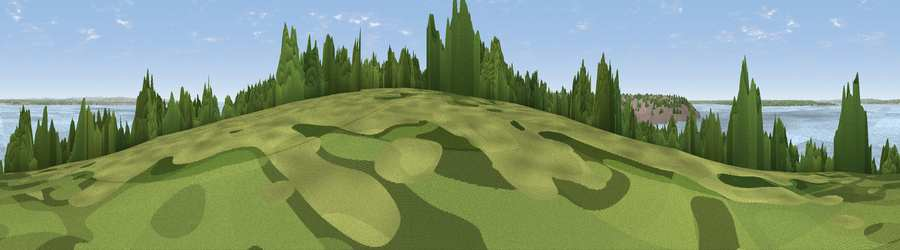

Viewpoint near East Cowes
#42084 in England · top 86% of its area beats it · near East CowesThe view, rendered

A 360° render of this exact spot computed from the terrain model, tree cover and land cover — summer colours, afternoon light, calibrated against photographs of famous viewpoints. Real trees, hedges and buildings will differ in detail.
The panorama
Grey silhouette: terrain skyline in each direction (720 bearings, Earth curvature and refraction included). Dashed green: skyline with trees (+15 m) and buildings (+8 m) as obstacles. Blue strip: how far the ground is visible on each bearing.
Where the view opens
Wedge length = distance to the farthest visible ground on that bearing (vegetation-aware). Rings at 10, 25 and 50 km.
What fills the view
79% water · 9% built-up · 6% woodland · 5% grassland · 2% cropland
Angular shares of the visible panorama (visual magnitude), not map area. Landscape diversity 0.35 (0–1 Shannon).
Key numbers
More beautiful places nearby
The staircase of upgrades: each row has a higher view potential than everything closer. Driving times are estimates from straight-line distance, calibrated against real road routing — check an actual route before setting out.
| Place | Direction | Drive | Score |
|---|---|---|---|
| Whippingham Hill | SSE · 3 km | ~7 min | 37.8 |
| Viewpoint near Gurnard | WSW · 5 km | ~11 min | 48.4 |
| Sticelett Hill | WSW · 5 km | ~11 min | 48.7 |
| Viewpoint near Porchfield | WSW · 7 km | ~15 min | 51.6 |
| Viewpoint near Porchfield | WSW · 8 km | ~17 min | 54.2 |
| Viewpoint near Havenstreet | SE · 9 km | ~18 min | 58.8 |
| Viewpoint near Carisbrooke | SSW · 9 km | ~18 min | 72.1 |
| Viewpoint near Arreton | SSE · 9 km | ~18 min | 74.1 |
50.76383, -1.27717 · source: screening · position refined by local search. Computed location — check access rights before visiting.